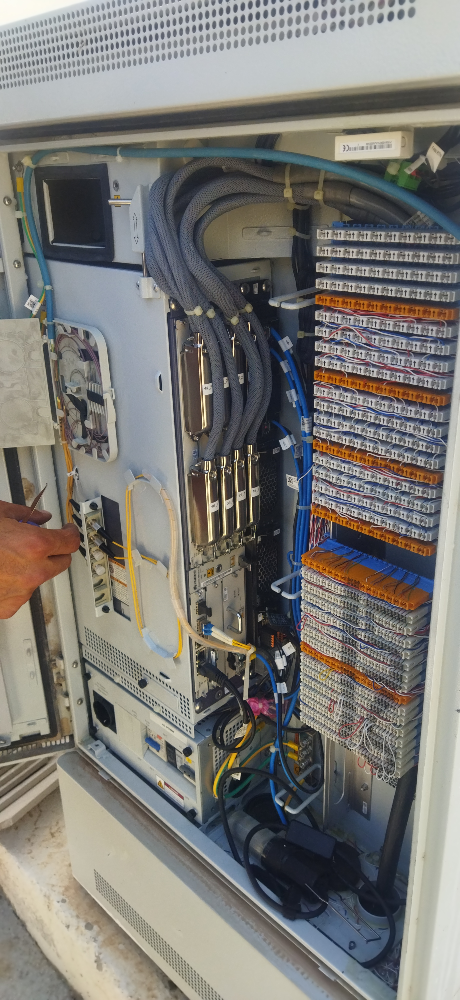
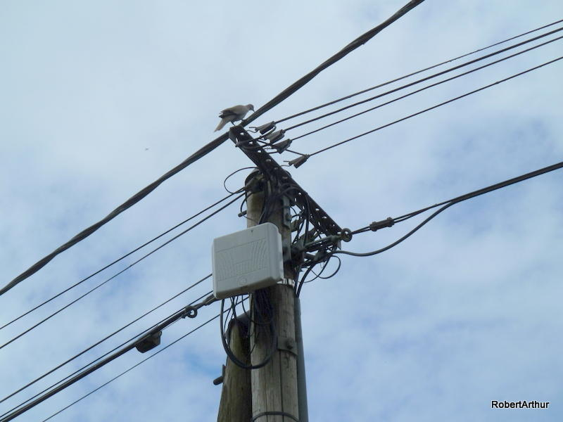

🧠 Structure complète de la ligne d’abonné Tunisie Telecom
Le réseau d'accès de Tunisie Telecom relie chaque abonné à travers plusieurs composants clés : depuis le Backbone national en fibre optique qui assure la liaison entre les grandes villes, jusqu’au Répartiteur Général (NRA) où sont concentrées et gérées les lignes des abonnés. Le signal est ensuite acheminé vers les Sous-Répartiteurs (SR) de quartier, puis vers les Points de Concentration (PC) proches des habitations, avant d’arriver enfin à la prise téléphonique chez l’abonné. Chaque étape joue un rôle essentiel pour garantir la qualité et la continuité du service Internet et téléphonique.
1. Backbone national
Réseau fibre optique interconnectant les grandes villes et les points d’agrégation. Comprend les câbles sous-marins SEA‑ME‑WE, Didon, Hannibal… :contentReference[oaicite:2]{index=2}
2. Répartiteur Général (NRA)
Répartiteur général / DSLAMRépartiteur général / DSLAM (vue 2)La réglette verticale , pour la position d'abonnéLa reglette horizontale source d'adsl et voix
Équipement central (DSLAM pour cuivre, OLT pour fibre) situé au niveau du NRA. Gère des réglettes verticales/horizontales et des jarretières .
3. Sous-Répartiteur (SR)

Sous répartiteur de rue
Armoire publique (SRZ ou SRI) intercalée entre le NRA et le Point de Concentration : elle répartit les liaisons de transport vers les zones ou immeubles.
4. Point de Concentration (PC)

Point de Concentration
Boîte (souvent 7 ou 14 paires) en façade ou sur poteau. Elle connecte les câbles de distribution aux câbles individuels et facilite la localisation des pannes .
5. Câbles de branchement jusqu’à l’abonné
Chaque abonné est relié via un câble uni-paire (5/9 ou 5/1) du PC à sa prise murale. Ces câbles varient selon usage interne/externe .
🔧 Technologies ADSL, Fibre & GPON
ADSL/VDSL :
ADSL (Asymmetric Digital Subscriber Line)
Technologie xDSL qui utilise les fils de cuivre du réseau téléphonique pour l'accès à Internet.
Débit généralement asymétrique : le débit descendant (téléchargement) est plus rapide que le débit montant (envoi).
Débits typiques : jusqu'à 15 Mbit/s en descendant et 1 Mb/s en montant.
Couverture large, accessible à la plupart des foyers.
Convient pour une utilisation standard d'internet (navigation, emails, etc.).
Fibre (GPON FTTH/FTTB) :
VDSL (Very-high-bit-rate Digital Subscriber Line)
Technologie xDSL qui améliore les performances de l'ADSL.
Débits plus rapides que l'ADSL, mais avec une portée plus courte.
Débits typiques : jusqu'à 100 Mbit/s en descendant et 8 Mbit/s en montant pour les lignes les plus courtes (inférieures à 300 mètres).
Nécessite une distance plus courte entre le logement et le central téléphonique (moins de 1 km).
Adapté pour les besoins de débit plus importants (streaming, jeux en ligne, etc.).
📊 Schéma de la boucle locale
La boucle locale est divisée en 3 segments :
Transport : entre SR et NRA (câbles multi‑paires de 112 à 1792 paires) .
Distribution : entre SR et PC (câbles de 14 à 224 paires) .
Branchement : câble uni‑paire du PC à l’abonné (ADSL ou fibre terminale) .